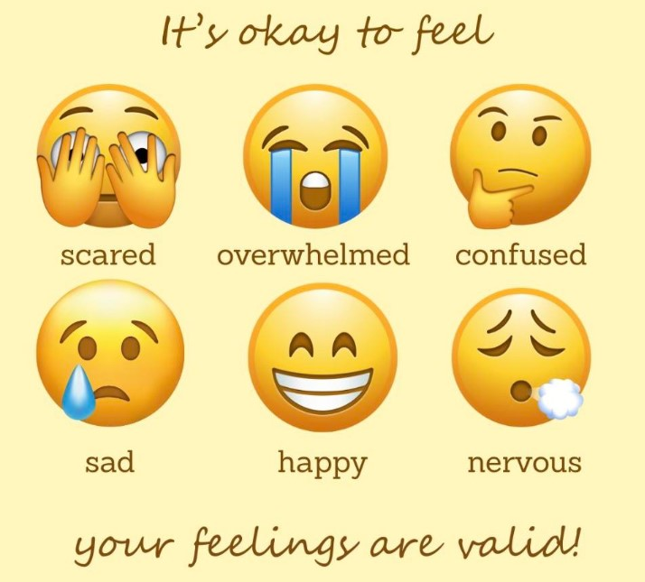

We all have days when our emotions feel too big to handle — a racing mind, a heavy heart, a knot in the stomach that won't go away. This space was created to offer simple, accessible tools to help you navigate those moments. Whether you're feeling anxious, angry, sad, or just overwhelmed, you'll find practical activities here to help you breathe easier, think clearer, and feel more balanced.
